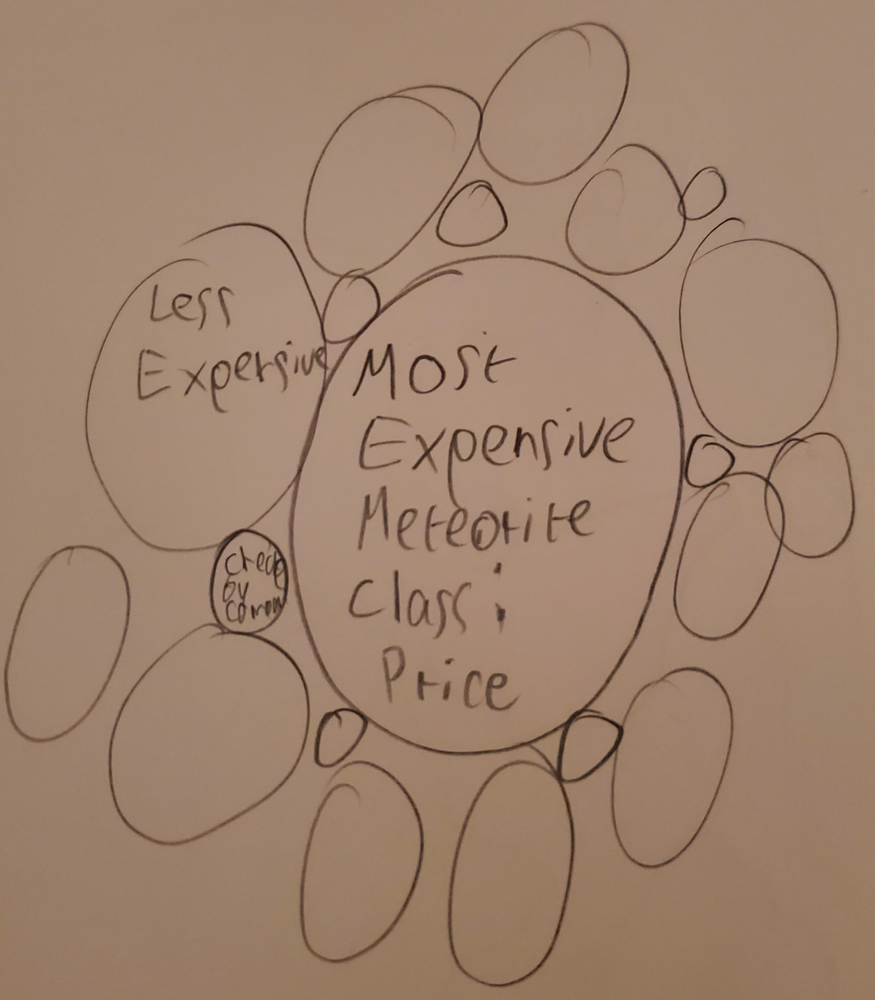
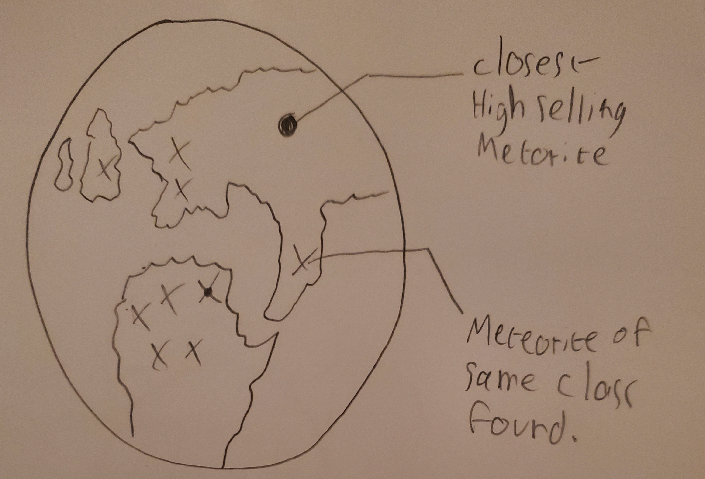

Image credits: Kōichirō Itō; Katsuhiro Takei, Your Name, 2016
Image credits: Kōichirō Itō; Katsuhiro Takei, Your Name, 2016
So, you've decided to track down space rocks and sell them for a living eh?
Well this website is going to equip you with the basic tools and knowledge you need to start finding, and trading meteorites for cold, hard cash!
History of meteorite selling and facts about the current state of the industry
rectangular projection showing the important trading places, finds the closest hub to your location
Profiles of meteorite hunters, collectioners and scientists (forece graph + tooltip)
Explanation of what makes a meteorite valuable or not (text)
Ten highest selling meteorites (Bubble graph)
General guidelines for finding meteorites in a safe and legal manner
Notable meteorite fields according to the data (rotating globe)
Tool identifying the closest high-selling meteorite to a chosen location and showing where similar meteorites were be found.